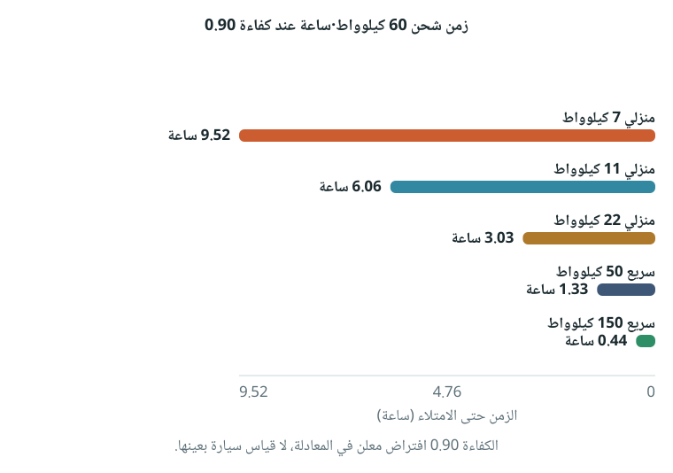

ما الذي يحدّد زمن شحن السيارة الكهربائية؟
How long an EV charge really takes
يتأثر زمن الشحن بمقدار الطاقة المطلوب إضافتها إلى البطارية، وبالقدرة الفعلية التي تقبلها أثناء الجلسة. لذلك قد تتساوى جلستان في الطاقة وتختلفان في المدة.
الشحنة المنزلية لا تعمل على قدرة ثابتة. الشاحن يحوّل الكهرباء المتردد إلى مستمر، وتُفقد نسبة في التحويل وفي تبريد البطارية، ثم تُقلّل السيارة التيار مع اقتراب الامتلاء لحماية الخلايا. لذلك يكون الزمن الفعلي أطول من قسمة بسيطة بين السعة والقدرة، ويكون الجزء الأخير من الشحنة هو الأبطأ. ما يهمّ المستخدم ليس القدرة القصوى المعلنة، بل الطاقة المفيدة لكل ساعة اتصال.
كيف تعمل الظاهرة؟
المسار ثلاث مراحل: مقوّم داخل الشاحن أو داخل السيارة، ثم إدارة حرارية للبطارية، ثم تنظيم الجهد على مستوى الخلية. كل مرحلة لها كفاءة أقل من الواحد، وحاصل ضربها هو الكفاءة الكلية التي تُقاس عادة بين 0.88 و0.93 للشحن المنزلي. إدارة البطارية تخفض التيار حين ترتفع حرارة الخلية أو يقترب الجهد من حده الأعلى.
العلاقة بالأرقام
الزمن = السعة المفيدة ÷ (القدرة × الكفاءة). عند 60 كيلوواط·ساعة وكفاءة 0.90 يصبح المقسوم عليه 0.9 من القدرة: شاحن 7 كيلوواط يعطي 6.3 كيلوواط فعّالة، أي 9.5 ساعة. وشاحن 11 كيلوواط يعطي 6.1 ساعة، وشاحن 22 كيلوواط 3.0 ساعات، وشاحن سريع 50 كيلوواط ساعة وربعًا. لاحظ أن مضاعفة القدرة لا تنصّف الزمن دائمًا، لأن حدّ السيارة نفسه قد يكون أقل من قدرة الشاحن.
مفاهيم متقاربة
القدرة المعلنة على الشاحن ليست القدرة الداخلة للبطارية، وسعة البطارية الإسمية ليست الطاقة المفيدة: تُحجز نسبة للسعة الاحتياطية. الفرق بين الرقمين هو أكثر سبب لخيبة الأمل عند أول تجربة شحن، وليس عيبًا في السيارة.
حدود التطبيق
الحساب يفترض منحنى شحن ثابتًا، وهو غير صحيح فوق 80% حيث تنخفض القدرة غالبًا إلى الثلث. كما يفترض أن البطارية في حرارة تشغيل مناسبة؛ في البرد قد تُسخّن السيارة البطارية أولًا فتُستهلك طاقة لا تصل للخلايا. الرقم الناتج حدّ أدنى واقعي لا وعد.

| الكمية | القيمة | المصدر |
|---|---|---|
| سعة البطارية المفيدة في المثال | 60 kWh | [1] |
| زمن الشحن بقدرة 7 كيلوواط | 9.5 ساعة | [2] |
| زمن الشحن بقدرة 11 كيلوواط | 6.1 ساعة | [2] |
| زمن الشحن السريع بقدرة 50 كيلوواط | 1.33 ساعة | [2] |
المصادر
- 1 U.S. DOE AFDC — Electric Vehicle Batteries — U.S. Department of Energy. afdc.energy.gov/vehicles/electric_batteries.html · اطُّلع عليه 2026-11-16
- 2 U.S. DOE AFDC — Home Charging — U.S. Department of Energy. afdc.energy.gov/fuels/electricity_charging_home.html · اطُّلع عليه 2026-11-16
- 3 U.S. EIA — Energy Explained: Electricity — U.S. Energy Information Administration. www.eia.gov/energyexplained/electricity/ · اطُّلع عليه 2026-11-16
راجعه: مراجعة آلية — ديوان المعرفة (أرقام محسوبة + مصادر متحققة) 2026-11-16 · 2026-11-16 · آخر تحديث 2026-11-17
رجوع إلى المقالات